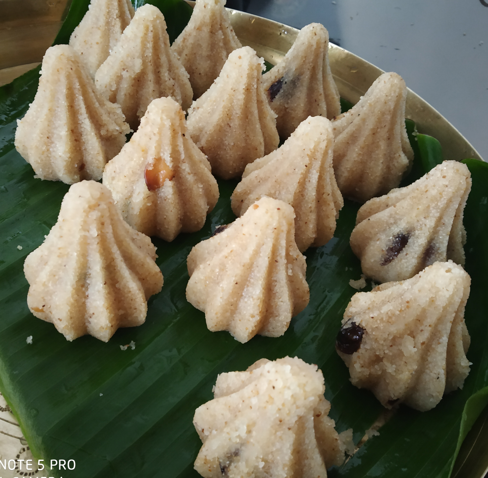

SUJI MODAK
In frame is Rava modak is a variation of modak made with semolina or sooji.
I recently made this sweet and thought of sharing the recipe with you.
INGREDIENTS :
Ghee,Rawa,dry fruits
sugar
water
STEPS ONE CAN FOLLOW(if needed) :
First take a pan and heat some ghee and then add Rawa
Then add dry fruits and cook for sometime
After that add sugar and cook for a minute and then add water and get to a sticky consistency and give the modak shape and keep in the fridge to set